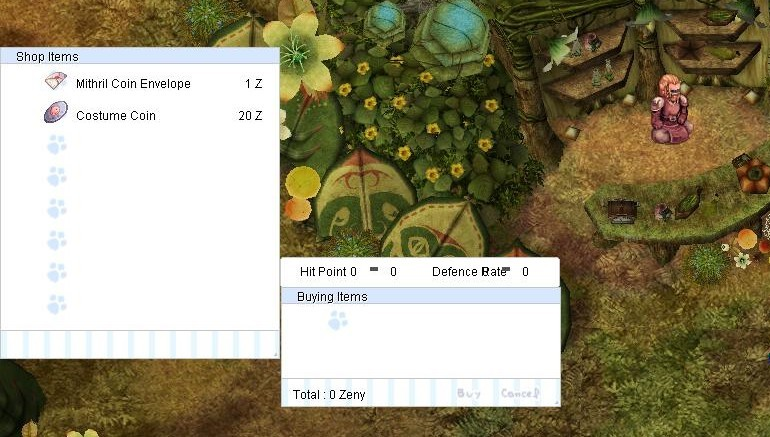

LABYRINTH
RAGNAROK ONLINE
SUPER HIGH RATE
FISHING
and
MINING

- To get MITHRIL COINS and COSTUME COINS
- To have fun while earning
FISHING
- can be done by ANY job class -
Step 1: Getting your FISHING GEARS
If you already have your gears, you can skip this step.
Click me to go to STEP 2
- Prepare 50 apples
- Go to QUEST TOWN

- Talk to this NPC just beside the fountain

- After talking to him, he will give you your FISHING GEARS in exchange for your 50 apples.
You will get 1 FISHING ROD and 1 FISHING LURE.

- Equip your gears and you're ready to fish!
Step 2: Getting to the Fishing Area
- Go to the bottom-right of quest town.

- Talk to the NPC at the port to warp to the fishing town.

- Welcome to ILYO KWON, the fishing town!
Step 3: Fishing at Ilyo Kwon
- Requirements: Fishing Lure & Fishing Rod -
If you do not have fishing gears,
press me to know how to get it.
-
To start fishing, simply click the dark swirls on the waters.
There are many of these in this map, so make sure to explore!
- All you have to do is click and wait.
- When you have a catch, you will be asked to enter the RED number.
- If you enter the wrong number, you will be warped back to Prontera.
Step 4: Exchanging your catch
There are 5 things that you can get in fishing:
(1) Anolian Skin
(2) Blue Fish
(3) Golden Fish
(4) Green Fish
(5) Red Fish
- To exchange your fish, talk to the lady NPC
near the end of the bridge.
- 150 Anolian Skins can be exchanged for 7 FCP scrolls at the MALL.
FISHING MASTERY LEVEL
What is the impact of your MASTERY LEVEL?
The higher your mastery level, the FASTER you fish.
- Talk to the guy at the bridge to know your current level.
- There are 4 levels: 0, 1, 2, and 3. You will start at 0.
- You'll need 20 fish catches to increase your level by 1.
MINING
- can be done by ANY job class -
Step 1: Getting your MINING GEARS
If you already have your gears, you can skip this step.
Click me to go to STEP 2
- Go to QUEST TOWN
- Talk to this NPC just beside the fountain
- Buy your gears from the NPC. For now, you only need
1 PICKAXE, 1 MINER'S HELMET, and 1 MINER'S BOOTS
- Equip your gears and you're ready to start mining!
Step 2: Getting to the Mining Area
- Go to the top-right of quest town.
- Enter the portal to get to the mines.
- Welcome to the mines of MORIA!
Step 3.1: Pickaxe Mining at Moria
- Requirements: 1 PICKAXE, 1 MINER'S HELMET, 1 MINER'S BOOTS -
If you do not have mining gears,
press me to know how to get it.
- To start mining, simply attack a MINERAL ORE.
- All you have to do is click and wait.
- You will get 1 MITHRIL ORE if mining is successful. Nothing if unsuccessful.
Step 3.2: Bomb Mining at Moria
- Requirements: MINING GEAR, LVL 2 MINING MASTERY, MELON BOMB, PINEAPPLE BOMB, BANANA BOMB -
Click me to know how to get lvl 2 mining mastery
-
Buy the bombs at the same shop you bought your mining gears.
To start bomb mining, simply click a CRYSTAL to set your bombs.
Bombing a crystal will cost:
1 melon bomb,
1 pineapple bomb, and
1 banana bomb.
- After setting your bomb, you have to get away from the crystal.
- If you get too close, the explosions will hit you and you will die.
- You have a chance of getting 4 MITHRIL ORES every crystal you bomb.
Note: You have to pick it up from the ground manually.
- While waiting for the explosions to finish, you can do pickaxe mining.
Step 4: Exchanging your ores
The most important loot in mining is MITHRIL ORE.
It is also advised that you collect ELUNIUM.
100 ELUNIUMS can be traded for 15 ABSOLUTE REPAIR SCROLLS at the MALL.
Exchange 20 MITHRIL ORES for 1 MITHRIL at this NPC.
Located at the center of Moria.
MITHRILS can be traded for MITHRIL ENVELOPE or COSTUME COIN.
Talk to the NPC at the left.

MINING MASTERY LEVEL
What is the impact of your MASTERY LEVEL?
The higher your mastery level, the FASTER you can pickaxe mine.
When you get to level 2, you will be able to BOMB MINE.
- Talk to this NPC at the center of Moria to know your current level.
- There are 4 levels: 0, 1, 2, and 3. You will start at 0.
- You'll need 100 successful mining attempts to increase your level by 1.